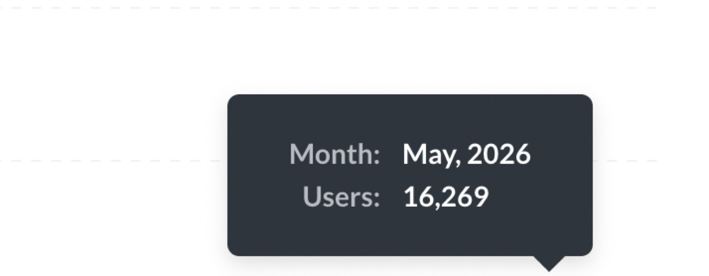

Little by Little, One Travels Far

Last month, Accrue had our highest number of signups ever. Over 16,000 people signed up in one month, which is still a little surreal to write because I remember when the numbers looked very different.
There was a time when we would get two signups in a day, then nothing for the next two days, then maybe three signups after that. When you are checking numbers every day, that kind of slow movement can start to feel painful. You believe in what you are building, and you know there is a real problem you are trying to solve, but belief does not always make the dashboard easier to look at.
I think that is what made this milestone meaningful for me. It was not just the number itself, even though I am very grateful for it. It was the reminder of all the small, uncertain, unglamorous steps that came before it.
Here are a few things it made me think about.
1. Putting one foot in front of the other is a real superpower.
I did not always know how we would get to thousands of users in a month. I knew we had to grow and keep finding better ways to tell people what Accrue does, but there was no perfect map showing exactly how everything would unfold.
A lot of the work was simply waking up and doing the next thing in front of us. At the time, many of those steps did not feel big. They felt ordinary, and sometimes they felt frustratingly small. But I am learning that small steps are only small when you look at them in isolation. When you repeat them long enough, they start to become something else.
That is why the phrase “little by little, one travels far” feels true to me. A lot of progress does not feel like progress while it is happening. It feels like showing up, trying again, and trusting that the effort is not wasted even when the results are not immediate.
2. There is no silver bullet in growth.
One thing I have become more convinced of is that growth rarely comes from one magical idea. There is a version of marketing that makes it sound like you are always one hack, one channel, one campaign, or one genius insight away from changing everything, but that has not really been my experience.
What I have seen is that growth is usually the result of many experiments done consistently over time. Someone I listened to once described it as: growth = experimentation + consistency. This is so true because experimentation without consistency can become random activity, and consistency without experimentation can become repetition without learning.
You need to try enough things to find what works, but you also need to stay with the process long enough to understand why something worked or why it did not. Some ideas will fail quickly. Some will show a small signal that is worth exploring. Some will look boring at first and then end up being surprisingly effective. That has been one of the more humbling parts for me: the ideas that sound the most impressive are not always the ones that produce the best results.
Sometimes the unassuming things work: the simple message works, and the channel you didn't overthink gives you more clarity than the campaign you spent weeks perfecting.
3. Trust your ability to figure things out.
This is probably the biggest personal lesson for me. A lot of the time, I do not know the answer at the beginning. I do not always know what message will land, what campaign will work, what channel will become important, or what the next unlock will be. I am learning to be more comfortable with that uncertainty.
What I am also learning is that not knowing at the beginning does not mean you are incapable. Most things start to make more sense when you stay with them long enough, ask better questions, and are willing to adjust.
I have had to trust my ability to figure things out. You try something, you look at the results, you listen to users, you ask for help, you change your mind when the evidence tells you to, and you try again. It sounds simple, but it takes a lot of patience and honesty to keep doing that when the outcome is not guaranteed.
I still feel like I am figuring out a lot. Accrue is still figuring out a lot. There are still many unknowns, and there will always be new problems to solve.
I am grateful for the 16k+ people who signed up last month. I am grateful for the team, for the experiments that worked, for the ones that did not, and for the days that taught us patience.
Little by little, one travels far.